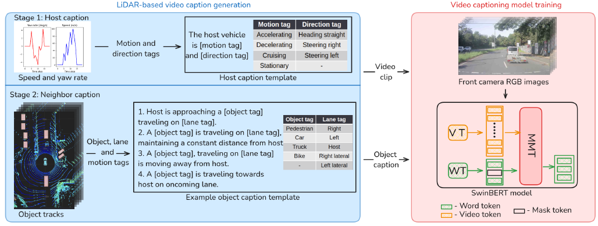
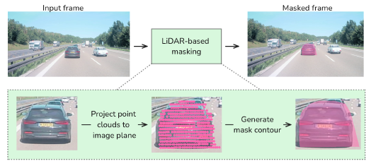
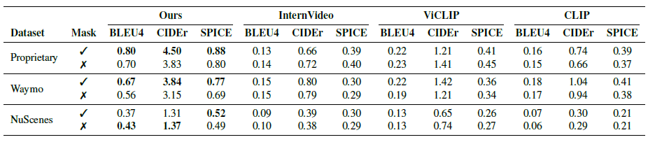
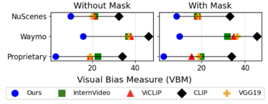
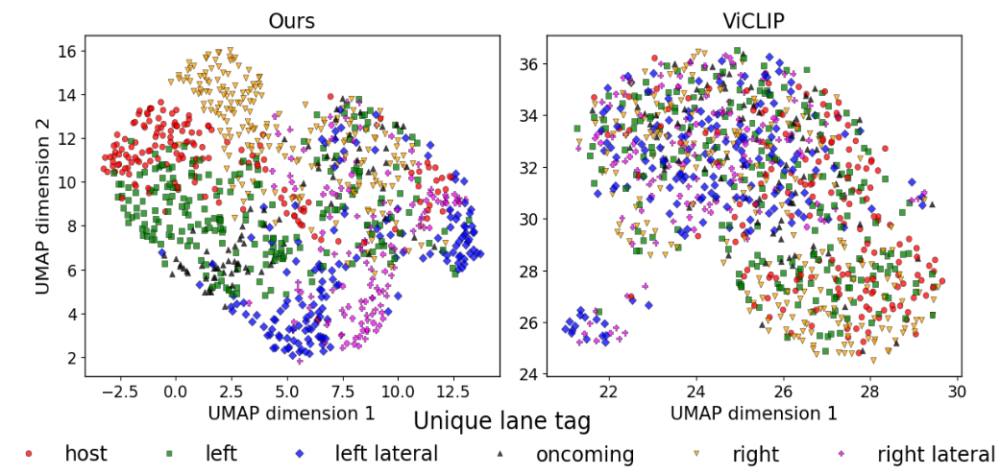
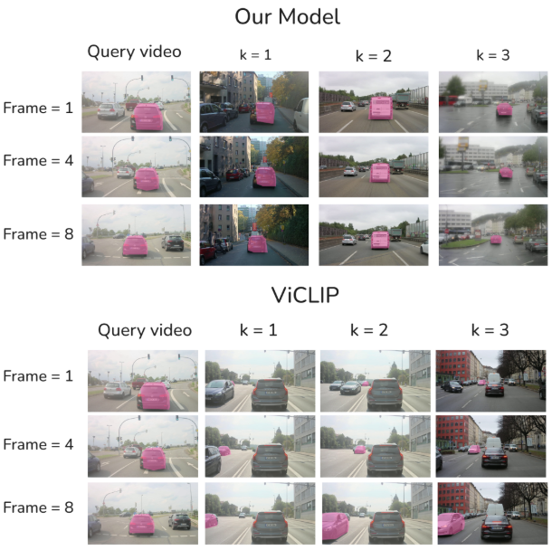

Temporal Object Captioning for Street Scene Videos from LiDAR Tracks
Vignesh Gopinathan1,2 • Urs Zimmermann2 • Michael Arnold2 • Matthias Rottmann3
1 Department of Mathematics, University of Wuppertal, Wuppertal, Germany
2 Aptiv, Germany
3 Institute of Computer Science, Osnabrück University, Osnabrück, Germany
Winter Conference on Applications of Computer Vision (WACV), 2026
Abstract
We introduce a fully automated LiDAR-based framework that generates temporally grounded object-level captions for driving scenes without human annotation. These captions provide strong temporal supervision for training video captioning models using only RGB front camera videos. Across multiple datasets, this LiDAR-driven supervision consistently improves temporal understanding, reduces visual bias, and generalizes robustly to unseen datasets and complex object behaviors, enabling scalable and temporally aware video understanding for autonomous driving.

Method Overview
LiDAR-based caption generation: We introduce a fully automated LiDAR-driven framework that generates temporally grounded traffic scene descriptions without human annotation. LiDAR-based object tracking is used to capture the evolving behavior of the host vehicle and surrounding objects.
1. Host caption: Driving sequences are segmented into short clips based on the host vehicle’s motion, and each clip is assigned a brief, template-based caption describing the host behavior.
2. Neighbor caption: For each clip, tracked surrounding objects are described using their relative position, motion, and object type. Temporal changes are summarized into concise, multi-sentence captions that express object behaviors and transitions.
Video Captioning Model training: The automatically generated LiDAR captions are used to train SwinBERT, a compact video captioning transformer that operates solely on front-camera RGB frames, following the masked language modeling (MLM) training strategy.

LiDAR-based object masks: An automated LiDAR-based masking step projects tracked 3D objects into the camera view to create object-specific pixel masks, reducing background bias and strengthening temporal grounding.

Metrics at a Glance
Captioning performance
Our model outperforms all baselines by a large margin, achieving up to 3× higher BLEU-4 and CIDEr on the proprietary dataset and 1.6–2× gains on Waymo and NuScenes, demonstrating strong generalization and superior temporal understanding.

Temporal Understanding
Visual Bias Measure (VBM), our custom metric, quantifies a model’s reliance on static visual cues by measuring performance drop when visually similar videos are excluded in a retrieval setup. Lower VBM indicates stronger temporal reasoning and reduced visual bias. Across all datasets, our model consistently achieves the lowest VBM, outperforming strong video and image baselines by a large margin and demonstrating superior temporal understanding and robust generalization beyond appearance-based cues.

Semantic-aware Embeddings
The UMAP visualization shows that our model learns a well-structured embedding space with clear and compact clusters corresponding to lane categories. Compared to the baseline, this improved separation indicates more effective encoding of lane semantics rather than reliance on low-level visual similarity.

Qualitative studies
In video-to-video retrieval, our model prioritizes action consistency over visual similarity, while ViCLIP relies more heavily on static appearance cues.

Key Contributions
1.Automated LiDAR-based captioning: A fully automated framework generates temporally grounded object-level captions directly from LiDAR data without human annotation.
2.Temporal caption-supervised learning: Training video captioning models with LiDAR-generated captions improves temporal understanding and reduces visual bias, reflected by lower VBM.
3.Enhanced generalization with object masks: LiDAR-based object masks further improve generalization by reducing reliance on background appearance and focusing learning on object dynamics.
Resources & Links
Acknowledgments
Citation
@inproceedings{temporal-object-captioning-wacv2026,
title={Temporal Object Captioning for Street Scene Videos from LiDAR Tracks},
author={To be updated post-review},
booktitle={WACV},
year={2026},
note={Under review; project page}}
Contact
Have questions or want to collaborate? Reach out: